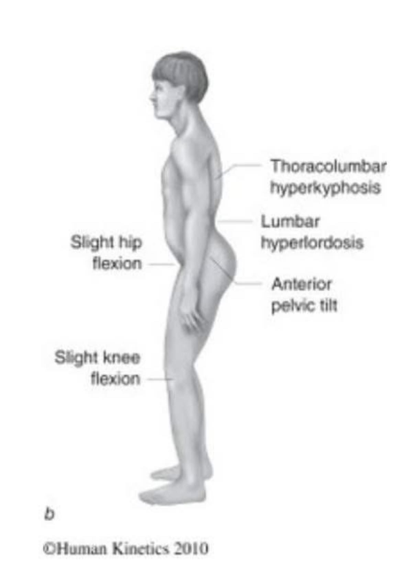
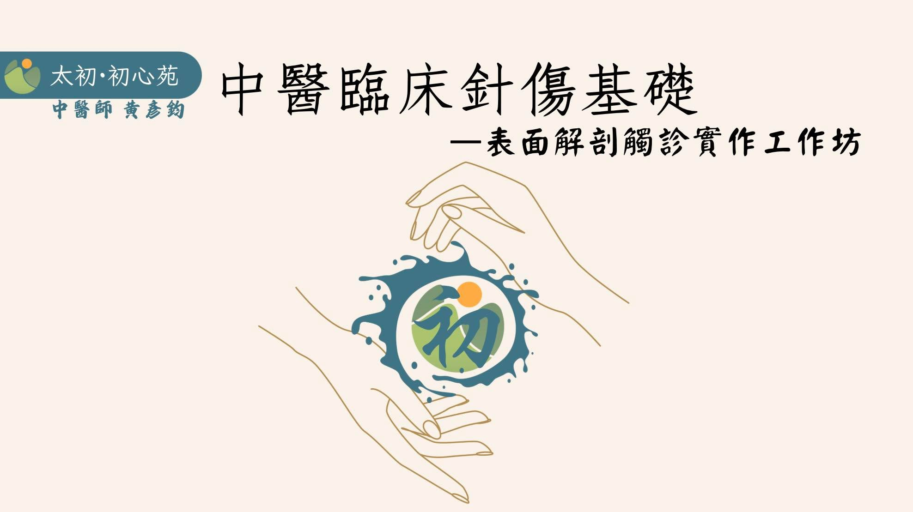

#膝蓋痛 了大半年走路會痛的阿姨，徒手治療完在診所裡笑著繞了10圈！
#膝蓋痛 了大半年走路會痛的阿姨，徒手治療完在診所裡笑著繞了10圈！
去年11月踩空跌倒，左腳踝腓骨遠端骨裂，右側膝蓋撞擊地面，隔天痛到不能走路。
後續又因為勉強行走又摔了第二次。
摔了這兩次，膝蓋痛到不行，因此長時間坐著或躺著，不敢正常活動，連在家行走都要拄拐杖，嚴重影響日常生活。
骨科X光檢查後，診斷退化性關節炎，直接建議換人工膝蓋。阿姨怕痛，當然不敢直接做治療，尋求住家附近的中醫診所治療，針灸膝蓋+貼黑藥布，就這樣治療了大半年。
健保雲端病例X光調出來看，右膝內側半月板間隙輕微狹窄，股骨脛骨確實有影像上的骨刺存在，但跟我看過需要動刀的膝蓋，相比之真的是好的不得了。
脈象雙尺脈沉弱無力，右側尺脈幾乎摸不到，右膝摸起來真的是略腫，但溫度沒有明顯的熱漲感。膝蓋不敢灣，但被動屈曲的角度受限並沒有想像中的大，問題應該不是膝關節本身，而是鄰近關節的牽連、抑制與代償而來的結果。
髖膝踝的力學連線是下肢運動的主要力量傳遞，膝關節屬於穩定性關節，會如此疼痛表示長期做了本不屬於他該做的事。拄著柺杖一跛一跛的走，該活動的關節不能活動，該穩定的關節不穩定，這大半年累積下來，當然痛到完全不敢動！
理學檢查一輪後，我診斷阿姨的膝蓋痛問題不在膝蓋，而在髖關節。
極度怕痛加上已經針了半年的膝蓋，好說歹說阿姨仍然不給我用針的機會😅😅😅
沒關係，那就用雙手！
透過姿勢擺位解除膝蓋到髖關節的肌筋膜張力限制，一路往上到腰椎骨盆，全程阿姨就舒服地躺著，徒手解完後下床測試，起初踏地還怕怕的，後面越走越開心，用走越穩定，在診所候診區一直繞圈走，最後單手「拎著柺杖」離開診所😆😆😆
透過徒手與肌筋膜的核心觀念完成了這次近乎戲劇性的診療，不論用針或是用手，其背後的解剖學與肌動學基礎都是相同的，打好基礎才是面對臨床實戰的根本！
表面解剖工作坊第三梯，名額已剩不到一半，最後席次，歡迎有興趣的人趕緊手刀報名！
太初中醫診所 東門中醫
太初·初心苑 肌筋膜脈學中醫應用
中醫師 黃彥鈞
#表面解剖工作坊第三梯次

